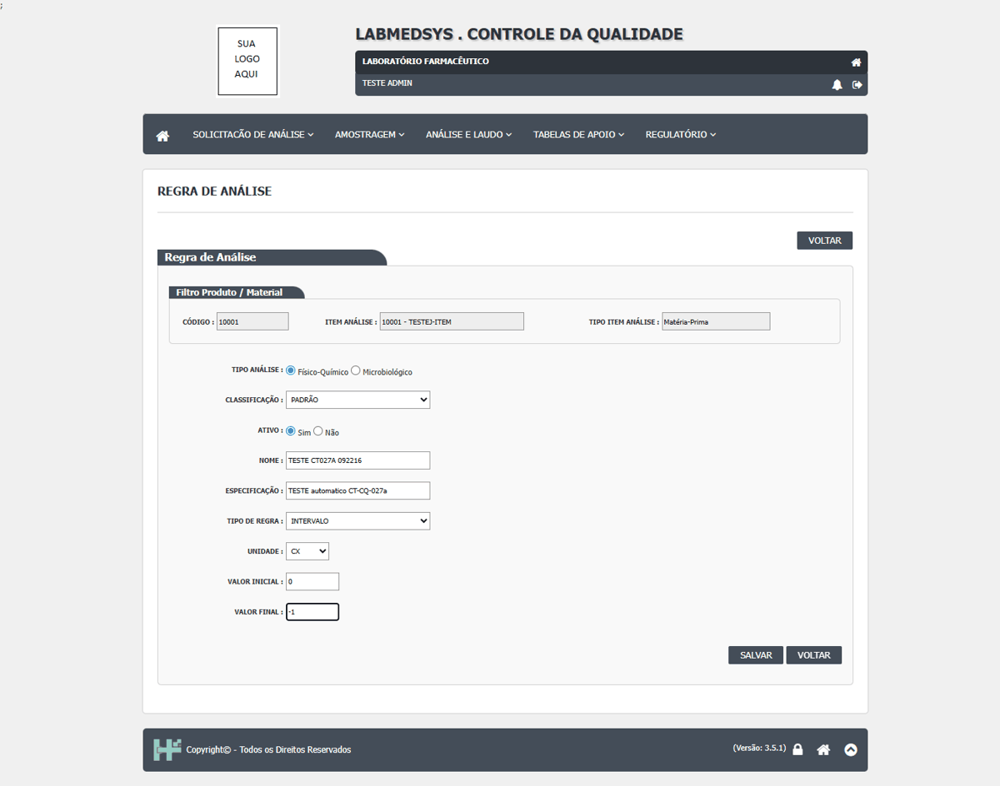
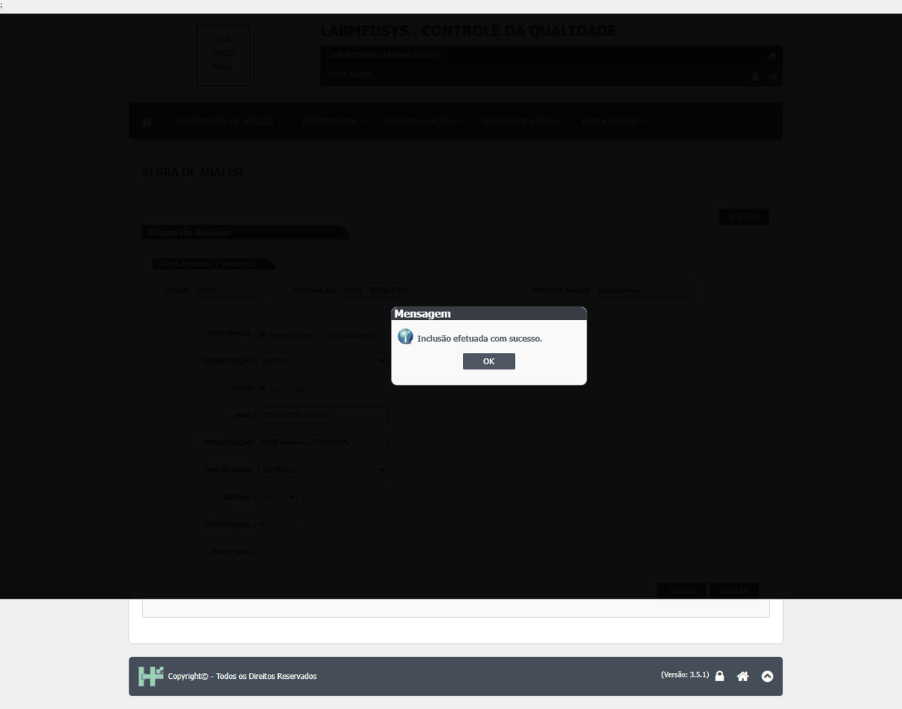
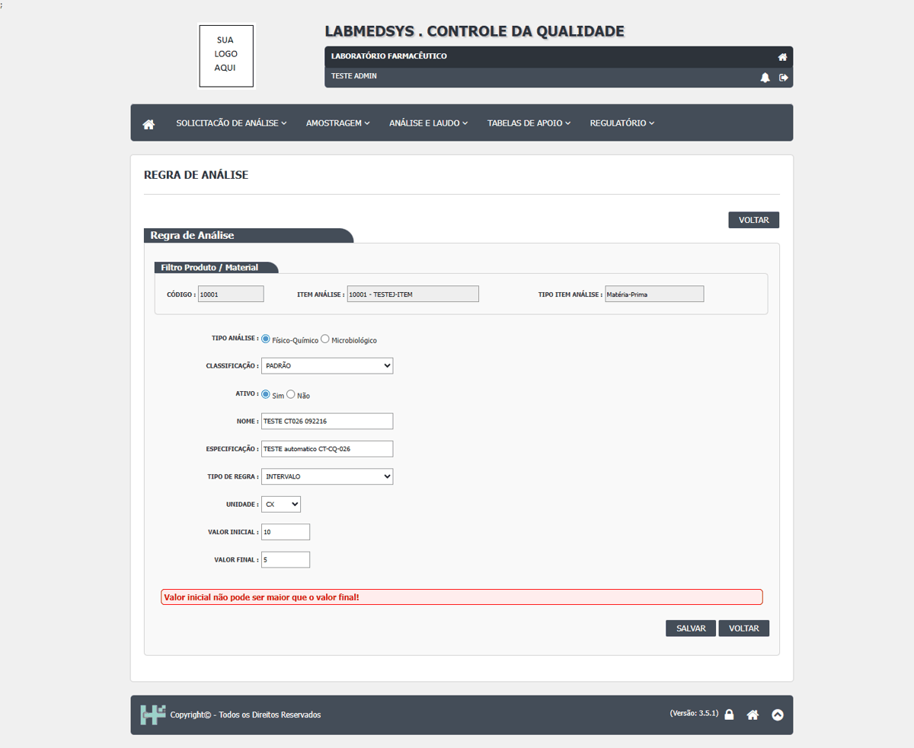
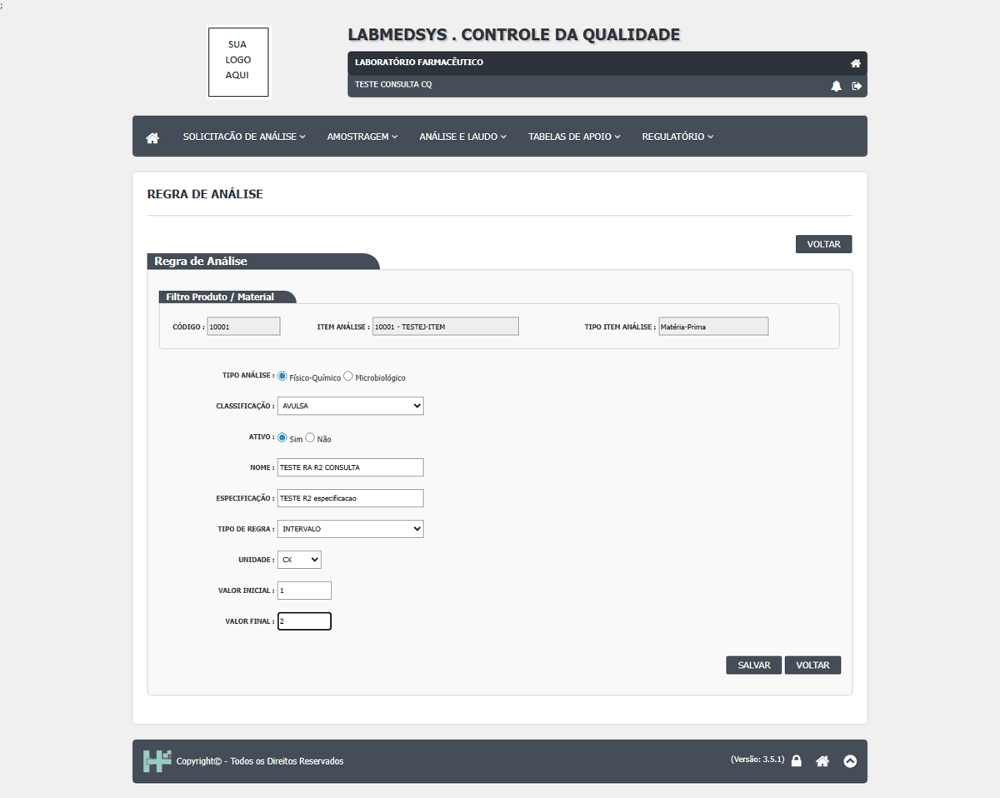
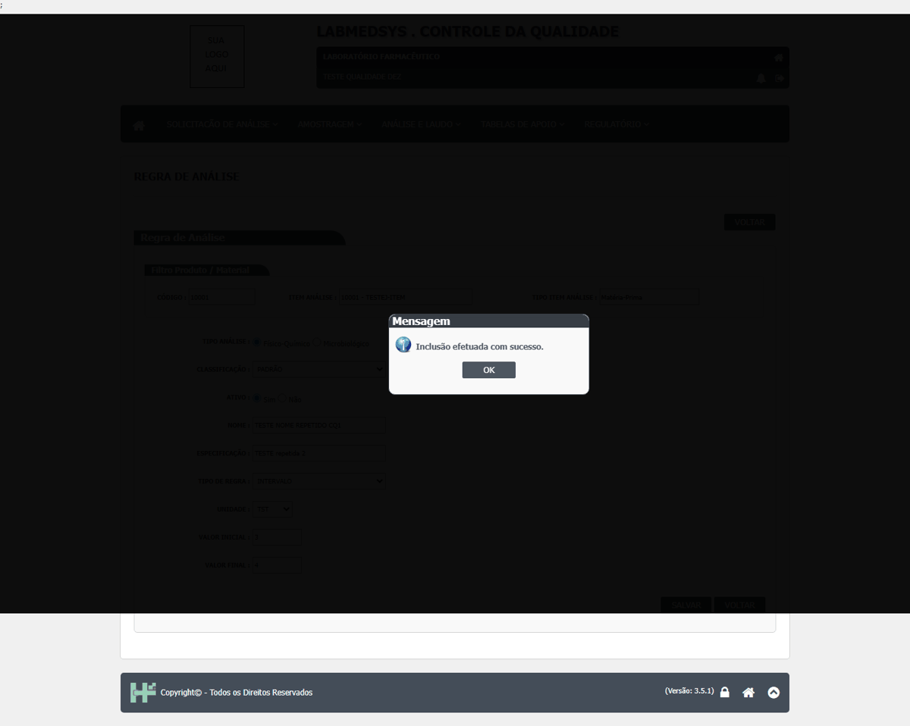

DV-CQ-002 · Regra de Análise aceita mínimo maior que o máximo quando há zero ou negativo
Numa regra do tipo **INTERVALO**, o sistema só confere se o mínimo é menor que o máximo quando **os dois valores são maiores que zero**. Com zero, valor negativo ou máximo em branco, a conferência é pulada e a regra é gravada. Exemplo testado: mínimo **0** e máximo **-1** foi aceito. A regra vira a especificação usada nas análises; com limites incoerentes, o resultado do ensaio é julgado contra limites errados e o laudo pode aprovar ou reprovar um lote indevidamente.
Como reproduzir o erro, passo a passo
- Entrar no módulo Controle da Qualidade e abrir Análise e Laudo › Regra de Análise.
- Em TIPO ITEM ANÁLISE, escolher MATÉRIA-PRIMA; em ITEM ANÁLISE, digitar TESTE e escolher um item; clicar em PESQUISAR e depois em INCLUIR.
- Preencher: Tipo de análise Físico-Químico, Classificação PADRÃO, Nome TESTE ..., Especificação qualquer, Tipo de regra INTERVALO, Unidade qualquer.
- Em VALOR INICIAL digitar 0 e em VALOR FINAL digitar -1.
- Clicar em SALVAR.
Esperado
Recusar, com a mensagem "Valor inicial não pode ser maior que o valor final!" (é o que acontece com mínimo 10 e máximo 5, caso CT-CQ-026).
Obtido
"Inclusão efetuada com sucesso." A regra com mínimo 0 e máximo -1 foi gravada. Com mínimo 10 e máximo em branco, também gravou.
Evidência (captura da tela)



DV-CQ-033 · Perfil só de consulta cria regra de análise
O usuário só de consulta incluiu a regra "TESTE RA R2 CONSULTA" (intervalo 1 a 2) para o item 10001.
Como reproduzir o erro, passo a passo
- Entrar com o perfil só de consulta.
- Abrir Regra de Análise, pesquisar o item 10001, Incluir, preencher (classificação, nome, especificação, intervalo 1 a 2) e Salvar.
Esperado
Recusar a gravação (e esconder o botão) para um perfil que só tem a consulta da tela; registrar a tentativa.
Obtido
"Inclusão efetuada com sucesso."
Evidência (captura da tela)

DV-CQ-014 · Duas Regras de Análise com o mesmo nome no mesmo item são aceitas
Foram gravadas duas regras com o nome "TESTE NOME REPETIDO CQ1" no item 10001, com limites diferentes: "Inclusão efetuada com sucesso." nas duas vezes. Na análise, os dois ensaios teriam o mesmo nome. Na mesma rodada, o **DV-CQ-002** foi reconfirmado (mínimo 0 e máximo -1 aceitos) e ampliado: **mínimo -5 e máximo -20** também foi aceito.
Como reproduzir o erro, passo a passo
- Em Regra de Análise, incluir a regra "TESTE NOME REPETIDO CQ1" (intervalo 1 a 2) para o item 10001.
- Incluir outra com o mesmo nome (intervalo 3 a 4).
Esperado
Recusar o nome repetido no mesmo item e tipo de análise.
Obtido
Aceitou.
Evidência (captura da tela)
